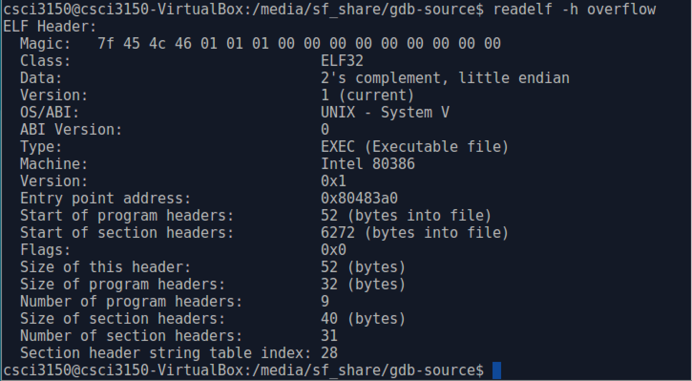
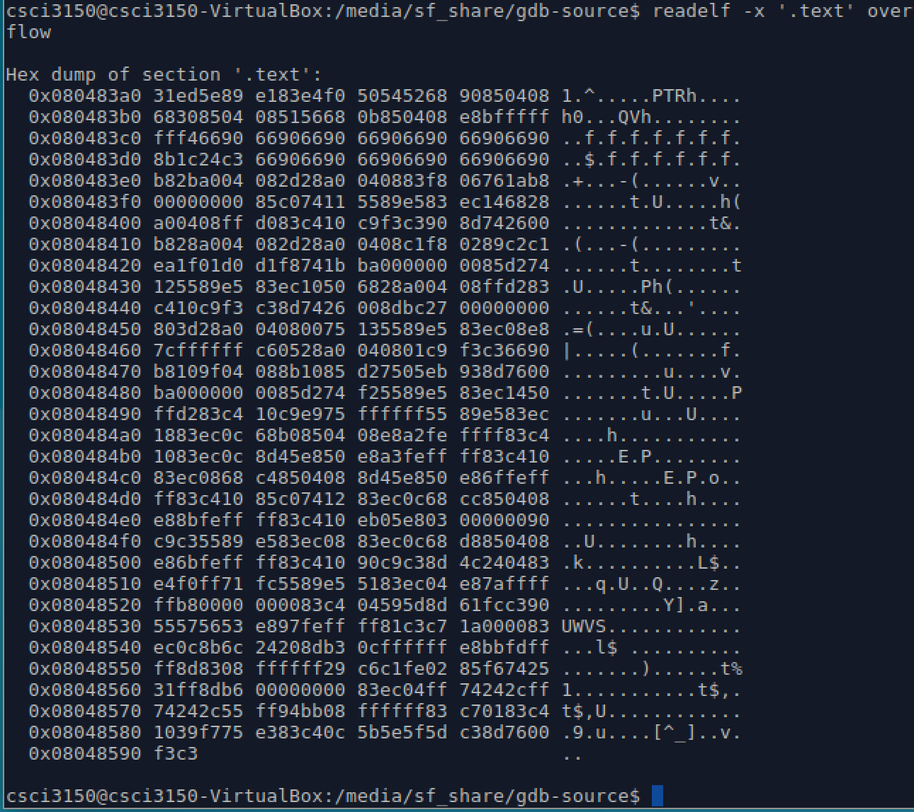

readelf
At first, we can enter readelf --help command in the terminal prompt to show help information.
Then we take overflow executable file as example, then use readelf to read its contents. The readelf_ usage format is as follows:
$ readelf [option] elf-file
At first we use readlf -all overflow to display all the information overflow contains in a human-friendly way.
To see a specific component like ELF file header, use command readelf -h overflow to display the EFL file(overflow) header. The header includes basic information describing the EFL file. For example, 'TYPE' of this ELF file is 'EXEC'(executable file), the 'Machine' is 'Intel 80386'. If you want to know more details about EFL file Header, I suggest you to read elf.h, whose absolute path is /usr/include/elf.h.

The following table lists some common options of readelf and corresponding description.
| Options | Description |
|---|---|
| -h | Display the EFL file header |
| -l | Display the program headers |
| -S | Display the section headers |
| -g | Display the section groups |
| -t | Display the section details |
| -s | Display the symbol table |
| -x | Dump the contents of section as bytes |
| -p | Dump the contents of section as strings |
If we want to read the .text section in hex, we can take -x option.
$ readelf -x '.text' overflow
The .text section contains the actual machine instructions which make up your program.
